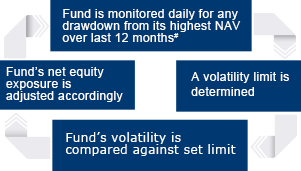

Benefit from the
Stabiliser Mechanism
The Fund employs a state-of-the-art Stabiliser Mechanism, which aims to reduce losses during adverse market conditions
#.
This way, you can have relative peace of mind while tapping into the growth potential of global equities.
# The Fund will seek to limit losses to 15% of the highest NAV (dividend reinvested) recorded in the previous 12 months but it is not guaranteed that this will be achieved. Any declines in the NAV of the Distribution Classes will approximately equal those of the Accumulation Classes with an additional reduction due to the relevant distributions paid out during the relevant period. Therefore if the NAV of an Accumulation Class were to fall by 15%, the NAV of the corresponding Distribution Class would fall by a further amount that would be approximately equivalent to the rate of distributions that were paid out for that Distribution Class during the relevant period. For holding periods of more than 12 months, investors can experience losses in excess of 15% even if the Stabiliser Mechanism achieves its goals during the relevant period. There is an opportunity cost in implementing the Stabiliser Mechanism; investors will have to give up the full potential of global equities for reduced loss in down markets. In particular, during periods of strong but volatile market recovery, the Fund may underperform the market significantly.
